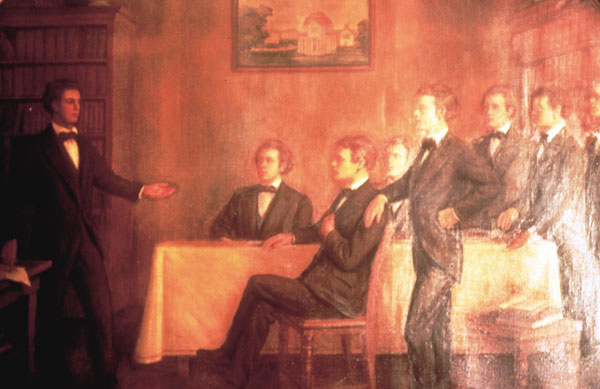

Sigma Alpha Epsilon was founded on March 9, 1856, at the University of Alabama in Tuscaloosa, Alabama. Its founders were Noble Leslie DeVotie, Nathan Elams Cockrell, John Barratt Rudulph, John Webb Kerr, Samuel Marion Dennis, Wade Hampton Foster, Abner Edwin Patton, and Thomas Chappell Cook. Their leader was DeVotie, who wrote the ritual, created the grip, and chose the name. Rudulph designed the badge.
By the end of 1857, the fraternity numbered seven chapters. Its first national convention met in the summer of 1858 at Murfreesboro, Tennessee, with four of its eight chapters in attendance. By the early 1860's, fifteen chapters had been established.
None of the founders of SAE were members of any other fraternity, although Noble Leslie DeVotie had been invited to join all of the other fraternities at the University of Alabama before founding Sigma Alpha Epsilon.
The founding of the chapter at University of Georgia in Athens, Georgia near the end of 1865, along with the re-establishment of the chapter at the University of Virginia, led to the fraternity's revival following the Civil War. Soon, other chapters we re-chartered and, in 1867, the first post-war convention was held at Nashville, Tennessee, where a half-dozen revived chapters planned the fraternity's future growth across the country.
In the 1870s and early 1880s, more than a score of new chapters were formed. The first northern chapter had been established at Pennsylvania College (now Gettysburg College), in 1883, and a second was placed at Mount Union College in Ohio two years later.
Soon after, 16-year-old Harry Bunting entered Southwestern Presbyterian University in Clarksville, Tennessee, now known as Rhodes College in Memphis, Tennessee. He was initiated into the Tennessee Zeta Chapter, which had previously initiated two of his brothers. In just eight years, Harry Bunting and his younger brother, George, emboldened Sigma Alpha Epsilon chapters to increase their membership. They wrote encouraging articles in the fraternity's quarterly journal, The Record, promoting better chapter standards. Above all, they gave new life to old chapters in the South (including the mother chapter at Alabama) and founded new ones in the North and West. The Buntings were responsible for an explosion of growth, founding nearly 50 chapters of Sigma Alpha Epsilon. When Harry Bunting founded the Northwestern University chapter in 1894, he initiated as a charter member William Collin "Billy" Levere. Bunting passed the torch of leadership to Levere, and for the next three decades, Levere's high spirits brought the fraternity to maturity.
When Levere died on February 22, 1927, the fraternity's Supreme Council decided to name the new national headquarters building The Levere Memorial Temple. Construction of the Temple, an immense German Gothic structure located near Lake Michigan and across from the Northwestern University campus, was started in 1929, and the building was dedicated in the winter of 1930.
When the Supreme Council met regularly in the early 1930s at the Temple, educator John O. Moseley, the fraternity's national president, lamented, "We have in the Temple a magnificent school-house. Why can we not have a school?" Accordingly, the economic depression notwithstanding, the fraternity's first Leadership School was held under the direction of Moseley in the summer of 1935. In the last years of Moseley's life, he served the fraternity as its executive secretary, capping an academic career that included two college presidencies.